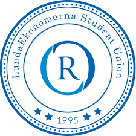

I am an exchange student at Essec in Paris. Currently I'm studying web development among other courses. The content of the other courses is mainly AI and cybersecurity with one course in Luxury Retail Management. I also study French to develop my previous knowledge of the subject. Next summer I graduate from my bachelor's in International Business at Lund University School of Economics and Management.
Here’s a link to my exchange school. I am really enjoying my time at ESSEC Business School in Cergy!

Alongside my studies in Lund, I have been involved in a committee that organizes employer branding events with various corporate partners. I was the project leader for 23 other students and my main responsibilities entailed organizing and overseeing all aspects like marketing, event-planning and photography. This experience has allowed me to develop teambuilding skills, leadership and creativity while meeting people from different backgrounds.